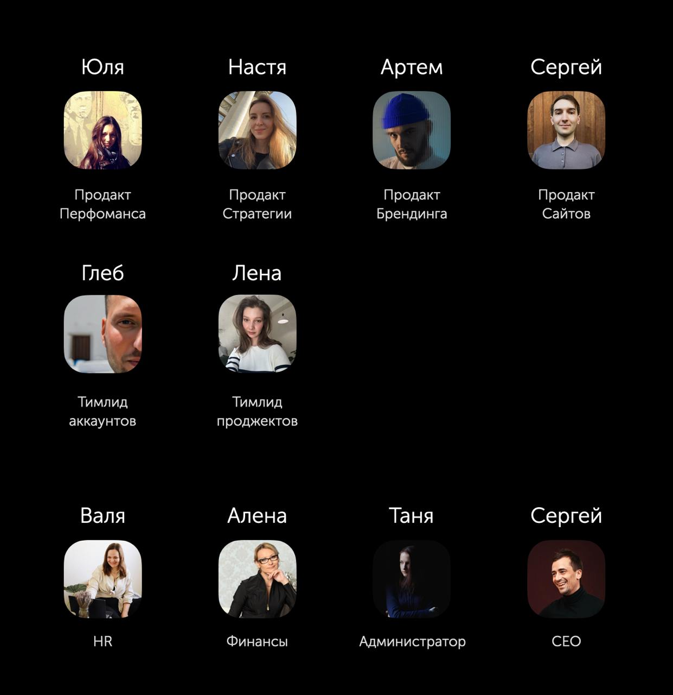

За последний год наше агентство значительно изменилось. Я давно начал осознавать, что сила и качество управляющей команды — это основа успеха компании. Именно это убеждение легло в основу глобальных изменений в управлении и культуре.
Сейчас управление агентством полностью в руках профессиональной управляющей команды, которой я полностью доверяю, поэтому не участвую в операционных процессах.
Текущая структура управляющей команды:
Продакты:
1. Продакт по Стратегии — Настя Попова
2. Продакт по Перфомансу (контекст, таргет, SEO, аналитика, CRM) — Юля Панецкая
3. Продакт по Брендингу (айдентика, SMM/инфлюенс, PR, контент) — Артем Горошников
4. Продакт по Сайтам — Сергей Кирин
Продакты отвечают за тимлидов направлений в своих продуктах. Их задача — развивать продукты, команду тимлидеров и создавать синергию между продуктами в комплексных проектах.
Тимлидеры менеджеров:
5. Тимлидер аккаунтов — Глеб Боровиков
Отвечает за развитие команды аккаунтов и старших аккаунтов (которые помогают в продажах).
6. Тимлидер проджектов — Лена Певнева
Развивает проджектов внутри каждого продукта и старших проджектов, которые помогают команде эффективно реализовывать проекты.
Команда инфраструктуры:
7. HR — Валя Иванова
8. Финансы — Алёна Беспалова
9. Администрирование — Таня Демина
10. Я — развитие УК и культуры
После проведенной трансформации, моя главная ответственность — развивать управляющую команду и культуру агентства. На встречах, я слушаю, задаю вопросы, предлагаю идеи, но финальные решения принимает управляющая команда самостоятельно. В последнее время больше стараюсь молчать и не встревать, так как считаю, что автономность принятия решений командой — это главный признак её зрелости. Даже новая стратегия агентства теперь разрабатывается командой без моего прямого участия.
Самое важное для меня качество в участниках УК — высокий уровень ответственности за свои результаты (и соответствие остальным нашим ценностям).
Управляющая команда задает уровень и культуру всему агентству, поэтому очень важно «масштабировать» правильные ценности.
Интересно понаблюдать, каких результатов мы сможем добиться с обновленной управляющей командой.
